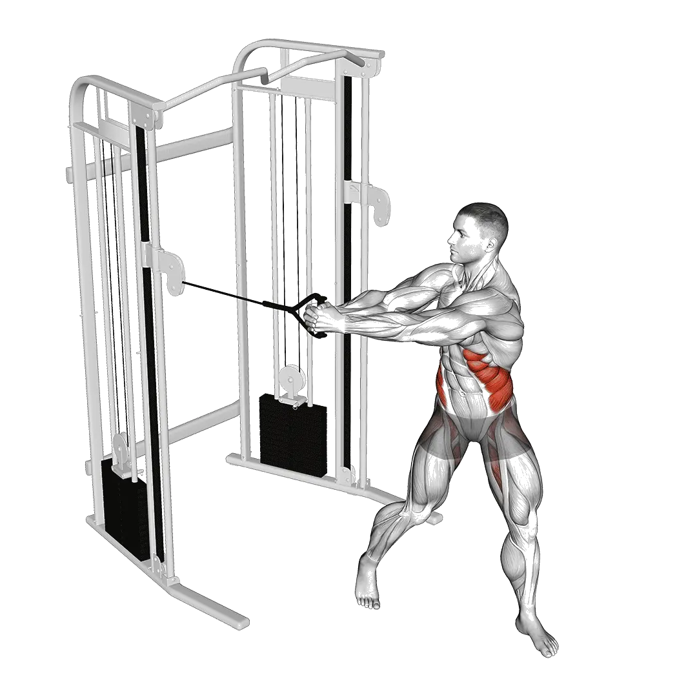

Woodchopper à la poulie
Woodchopper à la poulie permet de consulter la charge moyenne et les standards de force comme repères pour tronc. Les muscles principaux sont Obliques externes, Grand droit.

Poids moyen : Intermédiaire
Repère pour une personne de niveau intermédiaire.
Poids moyen de Woodchopper à la poulie [1RM]
| Niveau | ||
|---|---|---|
| Débutant | 7 kg | 3 kg |
| Novice | 20 kg | 7 kg |
| Intermédiaire | 40 kg | 14 kg |
| Avancé | 67 kg | 23 kg |
| Élite | 100 kg | 34 kg |
Note : ces standards sont des estimations de 1RM basées sur des pratiquants moyens. Ils peuvent varier selon le poids de corps, l'âge et d'autres facteurs personnels. Consulte les données détaillées dans le tableau ci-dessous.
Ton niveau actuel
Calcul du 1RM estimé et du niveau en Woodchopper à la poulie
Estime le 1RM à partir de la charge et des répétitions, puis compare-le au standard par poids de corps.
Cette estimation reste indicative. Technique, amplitude et fatigue peuvent modifier le résultat. Voir la méthode
Standards de force de Woodchopper à la poulie (kg)
Hommes par poids de corps (kg) [1RM]
| Poids de corps | Débutant | Novice | Intermédiaire | Avancé | Élite |
|---|---|---|---|---|---|
| 50 | 3 | 13 | 29 | 53 | 81 |
| 55 | 4 | 14 | 31 | 55 | 85 |
| 60 | 5 | 15 | 33 | 58 | 88 |
| 65 | 5 | 17 | 35 | 60 | 91 |
| 70 | 6 | 18 | 37 | 62 | 93 |
| 75 | 7 | 19 | 38 | 64 | 96 |
| 80 | 7 | 20 | 40 | 66 | 98 |
| 85 | 8 | 21 | 41 | 68 | 101 |
| 90 | 9 | 22 | 43 | 70 | 103 |
| 95 | 9 | 23 | 44 | 72 | 105 |
| 100 | 10 | 24 | 45 | 73 | 107 |
| 105 | 10 | 25 | 46 | 75 | 109 |
| 110 | 11 | 26 | 48 | 77 | 111 |
| 115 | 11 | 26 | 49 | 78 | 112 |
| 120 | 12 | 27 | 50 | 79 | 114 |
| 125 | 13 | 28 | 51 | 81 | 116 |
| 130 | 13 | 29 | 52 | 82 | 117 |
| 135 | 14 | 30 | 53 | 83 | 119 |
| 140 | 14 | 30 | 54 | 85 | 120 |
Hommes par âge [1RM]
| Âge | Débutant | Novice | Intermédiaire | Avancé | Élite |
|---|---|---|---|---|---|
| 15 | 6 | 17 | 34 | 57 | 85 |
| 20 | 7 | 19 | 39 | 65 | 97 |
| 25 | 7 | 20 | 40 | 67 | 100 |
| 30 | 7 | 20 | 40 | 67 | 100 |
| 35 | 7 | 20 | 40 | 67 | 100 |
| 40 | 7 | 20 | 40 | 67 | 100 |
| 45 | 7 | 19 | 38 | 64 | 95 |
| 50 | 6 | 18 | 36 | 60 | 89 |
| 55 | 6 | 16 | 33 | 55 | 82 |
| 60 | 5 | 15 | 30 | 51 | 75 |
| 65 | 5 | 13 | 27 | 46 | 68 |
| 70 | 4 | 12 | 24 | 41 | 61 |
| 75 | 4 | 11 | 22 | 37 | 54 |
| 80 | 3 | 10 | 19 | 33 | 49 |
| 85 | 3 | 9 | 17 | 29 | 44 |
| 90 | 3 | 8 | 16 | 26 | 39 |
Femmes par poids de corps (kg) [1RM]
| Poids de corps | Débutant | Novice | Intermédiaire | Avancé | Élite |
|---|---|---|---|---|---|
| 40 | 2 | 5 | 11 | 19 | 29 |
| 45 | 2 | 6 | 12 | 20 | 30 |
| 50 | 2 | 6 | 13 | 21 | 31 |
| 55 | 3 | 7 | 13 | 22 | 32 |
| 60 | 3 | 7 | 14 | 23 | 33 |
| 65 | 3 | 8 | 14 | 23 | 34 |
| 70 | 3 | 8 | 15 | 24 | 35 |
| 75 | 4 | 8 | 15 | 25 | 36 |
| 80 | 4 | 9 | 16 | 25 | 36 |
| 85 | 4 | 9 | 16 | 26 | 37 |
| 90 | 4 | 9 | 17 | 26 | 38 |
| 95 | 4 | 10 | 17 | 27 | 38 |
| 100 | 5 | 10 | 18 | 27 | 39 |
| 105 | 5 | 10 | 18 | 28 | 39 |
| 110 | 5 | 10 | 18 | 28 | 40 |
| 115 | 5 | 11 | 19 | 29 | 40 |
| 120 | 5 | 11 | 19 | 29 | 41 |
Femmes par âge [1RM]
| Âge | Débutant | Novice | Intermédiaire | Avancé | Élite |
|---|---|---|---|---|---|
| 15 | 3 | 6 | 12 | 20 | 29 |
| 20 | 3 | 7 | 14 | 23 | 33 |
| 25 | 3 | 7 | 14 | 23 | 34 |
| 30 | 3 | 7 | 14 | 23 | 34 |
| 35 | 3 | 7 | 14 | 23 | 34 |
| 40 | 3 | 7 | 14 | 23 | 34 |
| 45 | 3 | 7 | 14 | 22 | 33 |
| 50 | 3 | 7 | 13 | 21 | 31 |
| 55 | 2 | 6 | 12 | 19 | 28 |
| 60 | 2 | 6 | 11 | 18 | 26 |
| 65 | 2 | 5 | 10 | 16 | 23 |
| 70 | 2 | 5 | 9 | 14 | 21 |
| 75 | 2 | 4 | 8 | 13 | 19 |
| 80 | 1 | 4 | 7 | 11 | 17 |
| 85 | 1 | 3 | 6 | 10 | 15 |
| 90 | 1 | 3 | 6 | 9 | 13 |
Note : la charge affichée sur les machines et les poulies peut varier selon le fabricant. Utilise ces valeurs comme repères dans des conditions comparables.
Muscles ciblés
| Groupe | Muscles |
|---|---|
| Muscles principaux | Obliques externes, Grand droit |
| Muscles secondaires | Grand dorsal, Érecteurs du rachis |
| Stabilisateurs | Grand droit, Obliques externes |
| Prise | Fléchisseurs de l'avant-bras |
Suivi et analyse dans l'app Shiba
Consultez poids, répétitions et progression au même endroit.
Comment lire le tableau
| Niveau | Description | Répartition |
|---|---|---|
| Débutant | Maîtrise la bonne technique et s'entraîne régulièrement depuis au moins 1 mois. | Bas 5% |
| Novice | S'entraîne régulièrement depuis au moins 6 mois. | Top 80% |
| Intermédiaire | S'entraîne régulièrement depuis au moins 2 ans. | Top 50% |
| Avancé | S'entraîne régulièrement depuis plus de 5 ans. | Top 20% |
| Élite | S'entraîne spécifiquement sur cet exercice depuis plus de 5 ans. | Top 5% |